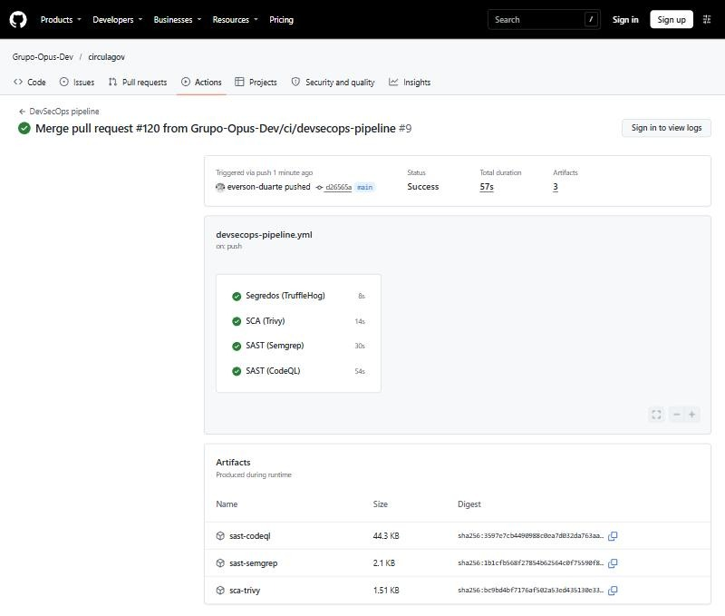
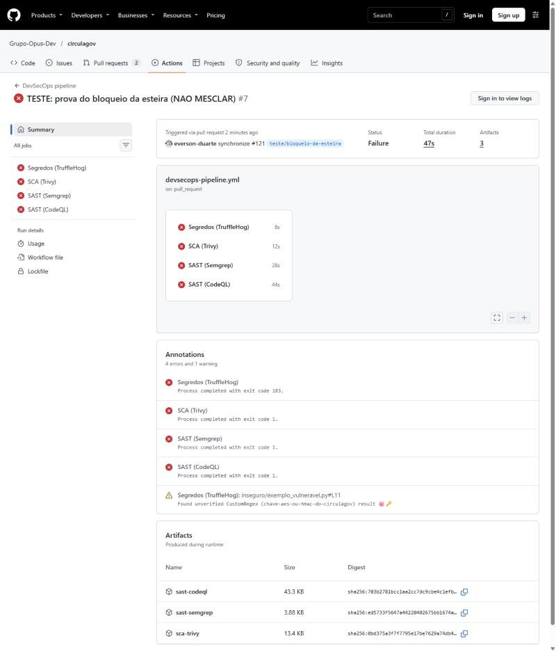
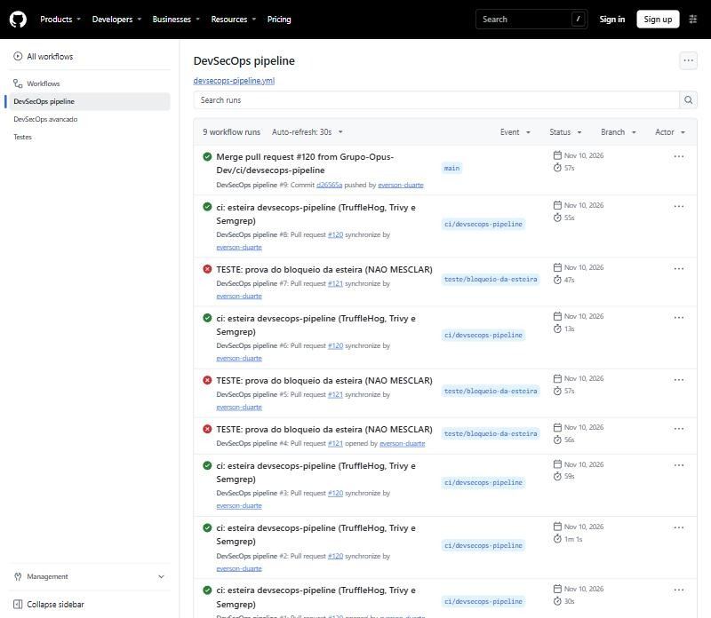
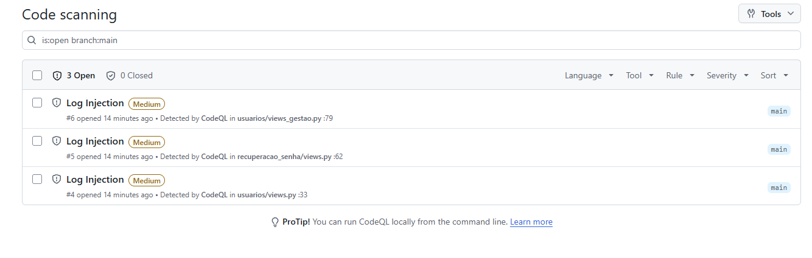

Atividade Devops2: automação de segurança com GitHub Actions
| Sistema | CirculaGov, plataforma de identidade e proteção de dados pessoais (Django 5.2, PostgreSQL 17) |
| Instituição | Universidade de Mogi das Cruzes (UMC) |
| Integrantes | Emanuel Victor (@Manuzel); Everson Duarte de Souza (@everson-duarte); Maycon Wendyl da Silva Pereira (@wendylmaycon); Vitor Dias Santana (@vitin2505) |
| Repositório | https://github.com/Grupo-Opus-Dev/circulagov |
| Workflow | .github/workflows/devsecops-pipeline.yml |
| Release | v1.6.0, https://github.com/Grupo-Opus-Dev/circulagov/releases/tag/v1.6.0 |
| Data | 10/11/2026 |
Em um ciclo de desenvolvimento tradicional, a segurança é verificada no fim, perto da entrega, quando uma falha já está misturada a outras mudanças e custa mais para encontrar e corrigir. A abordagem DevSecOps (ou SecDevOps) desloca essa verificação para o início: cada alteração no código passa, de forma automática, pelas mesmas checagens de segurança, antes de chegar à branch principal.
No CirculaGov, isso importa por três motivos. O sistema guarda dados pessoais de alunos, sob a LGPD. Ele depende de chaves de criptografia (AES-GCM para o segundo fator e HMAC para o log) que não podem vazar. E o grupo tem quatro integrantes alterando o mesmo código. A esteira automatizada transforma as diretrizes de segurança do documento de Requisitos em verificações que rodam sozinhas e deixam registro, em vez de depender da atenção de quem revisa.
O workflow devsecops-pipeline.yml roda em todo Pull Request, em todo push na main, uma vez por semana (para pegar CVE novas sem mudança de código) e sob demanda. São quatro jobs independentes, em paralelo:
| Vertente | Ferramenta e versão | O que verifica | Bloqueia quando |
|---|---|---|---|
| Segredos | TruffleHog 3.99.8 (imagem fixada por digest) | Todo o histórico do Git (fetch-depth: 0), não só o último commit | Encontra qualquer segredo, verificado ou não (código de saída 183) |
| SCA | Trivy 0.76.1 (binário conferido por sha256) | CVE nas dependências do requirements.txt | CVE de severidade HIGH ou CRITICAL (--exit-code 1) |
| SAST | Semgrep 1.184.0 (open-source) | Regras p/python, p/django e p/owasp-top-ten | Achado de severidade ERROR, a faixa alta do Semgrep (--error) |
| SAST (bônus) | GitHub CodeQL 4.39.3 | Suíte security-extended para Python, com análise de fluxo de dados | Achado com security-severity de 7,0 ou mais, faixas alta e crítica do CVSS |
.trufflehog.yml para CHAVE_CIFRAGEM_2FA, CHAVE_INTEGRIDADE_LOGS e SECRET_KEY escrita no código. O padrão foi conferido contra todo o histórico, sem nenhum falso positivo.requirements.txt, para que "0 vulnerabilidades" nunca signifique "não li nada".--metrics=off impede o envio de dados ao fornecedor.Cada job termina com código de saída diferente de zero quando encontra falha alta ou crítica. Os quatro jobs foram incluídos nas checagens obrigatórias da regra de proteção da main, junto das quatro que o projeto já tinha (testes, DAST com ZAP, SBOM com Trivy e privacidade com Bearer). Assim, um Pull Request com achado não pode ser mesclado. Achados de severidade média ou baixa aparecem no painel de segurança, mas não bloqueiam.
Todas as actions, imagens e ferramentas estão fixadas por SHA de commit, digest ou versão exata. Uma tag como @v1 pode ser reescrita depois, como a esteira avançada do projeto registra ter acontecido com o trivy-action em março de 2026. Um SHA não pode ser reescrito.
A esteira não substitui os requisitos, mas verifica continuamente que eles não regridem. A tabela liga os itens do documento base ao que é conferido automaticamente a cada mudança.
| Requisito | Como a esteira protege ou audita |
|---|---|
| 3.6 Chaves criptográficas protegidas | O TruffleHog, com o detector próprio, impede que as chaves AES e HMAC sejam escritas no código ou em qualquer commit. As chaves vivem só no .env do servidor. |
| 3.4 e 3.5 Criptografia em repouso e algoritmo adequado | O CodeQL (security-extended) e o Semgrep têm regras para algoritmos fracos e hash inadequado de dado sensível, que acusariam uma troca do AES-GCM ou do Argon2id por algo inseguro. |
| 1.1 a 1.4 Hash de senhas | Uma alteração que passasse a guardar senha com hash fraco seria acusada pelo SAST. O Trivy acompanha as CVE do argon2-cffi e do cryptography. |
| 1.x e 2.x Autenticação e recuperação de senha | O SAST analisa as views de login, 2FA e recuperação, que recebem dado do usuário. Os alertas de injeção em log encontrados (seção 4.4) estão justamente nessas views. |
| 3.1 a 3.3 Comunicação segura | Complementa a esteira de testes, que valida a configuração de produção com DEBUG=False (HTTPS obrigatório, cookies seguros e HSTS). |
| Bloco 4, LGPD | Vazamento de credencial expõe dados pessoais. O TruffleHog reduz esse risco, e a esteira de privacidade (Bearer) procura dado pessoal em log e código. |
| 5.3 Proteção contra alteração dos logs | O CodeQL acusou que o nome de usuário vai ao log de console sem neutralizar quebras de linha, o que permitiria forjar linhas fora do arquivo assinado (seção 4.4). |
| 6.9 e 6.10 Testes de segurança e resultados documentados | Cada execução fica registrada no GitHub Actions, com data, commit e relatórios em JSON e SARIF como artefatos. Isso é uma trilha de auditoria contínua dos testes de segurança. |
Do ponto de vista de conformidade, a regra de proteção da main garante que nenhuma mudança chegue à produção sem passar pelas oito checagens. O histórico de execuções mostra, para qualquer versão, quais verificações rodaram e com qual resultado.
Depois do merge do Pull Request #120, a esteira rodou na main (commit d26565a) com os quatro jobs aprovados. Nos logs: o TruffleHog leu 679 blocos do histórico (718.548 bytes) com 0 segredos; o Trivy leu o requirements.txt com 0 CVE alta ou crítica; o Semgrep rodou 70 regras em 160 arquivos com 0 achados; e o CodeQL encontrou 3 alertas, nenhum alto ou crítico.

Para demonstrar que a política bloqueia de fato, o grupo abriu um Pull Request descartável (#121), que nunca foi mesclado, com três problemas plantados de propósito: uma chave AES inventada escrita no código, código com injeção de comando e execução de entrada do usuário, e o Django rebaixado para a versão 3.2.0. Os quatro jobs falharam pelo motivo esperado.
| Job | O que encontrou | Saída |
|---|---|---|
| Segredos (TruffleHog) | A chave plantada, pelo detector próprio chave-aes-ou-hmac-do-circulagov, em inseguro/exemplo_vulneravel.py, linha 11 | código 183 |
| SCA (Trivy) | 22 CVE no Django 3.2.0: 16 HIGH e 6 CRITICAL, entre elas a CVE-2021-35042 (injeção de SQL) | código 1 |
| SAST (Semgrep) | 5 achados bloqueantes, como command-injection-os-system e subprocess-injection | código 1 |
| SAST (CodeQL) | 3 achados críticos: py/command-line-injection (nota 9,8, duas vezes) e py/code-injection (9,3) | código 1 |

Com as checagens obrigatórias, o GitHub marcou o Pull Request como bloqueado para merge. Saída da API do GitHub, capturada em 09/11/2026:
$ gh pr view 121 --json mergeStateStatus BLOCKED $ gh pr checks 121 --required SAST (CodeQL) fail SAST (Semgrep) fail SCA (Trivy) fail Segredos (TruffleHog) fail dast-zap fail privacidade-bearer fail sbom-trivy fail testes fail
Mitigação de cada achado do teste, caso fosse código real: remover a chave do código e de todo o histórico, trocar a chave comprometida e lê-la só do ambiente; atualizar o Django para uma versão corrigida (a 5.2.17, em uso no projeto); nunca passar entrada do usuário para o shell, usando lista de argumentos sem shell=True e uma lista fechada de comandos permitidos; e nunca usar eval sobre entrada externa. O Pull Request foi fechado sem merge e a branch, apagada.

Na primeira execução do teste, o CodeQL encontrou os três achados críticos, mas o job passou. A causa: o passo de bloqueio procurava a nota de severidade em tool.driver, e o SARIF do CodeQL guarda as regras em tool.extensions. Do jeito que estava, o CodeQL nunca bloquearia nada. O passo foi corrigido para resolver cada regra pela referência do achado e, se não conseguir resolver alguma, falhar em vez de deixar passar. Isso mostra por que uma esteira de segurança precisa de um teste negativo, e não só de execuções verdes.
Também durante o teste, a proteção contra segredos do próprio GitHub (push protection) recusou o envio de uma chave inventada no formato da AWS. É uma camada a mais, antes mesmo da esteira. O grupo não usou o link de liberação. Trocou o teste por uma chave no formato das chaves do projeto, que só o detector próprio reconhece.
CVE na imagem Docker (corrigida). Durante a integração, a esteira de SBOM passou a apontar duas CVE HIGH na zlib da imagem base python:3.13-slim (CVE-2026-76844 e CVE-2026-85091). O Debian já havia publicado a correção, mas a imagem base ainda não tinha sido reconstruída. Como a checagem é obrigatória, nenhum Pull Request podia ser mesclado. A mitigação foi aplicar as atualizações de segurança do Debian no build (apt-get upgrade no Dockerfile), confirmada no log do build pela instalação da versão corrigida 1:1.3.dfsg+really1.3.1-1+deb13u1. A imagem foi reconstruída em produção.
Alertas do CodeQL no painel de segurança (abertos, severidade média). A análise da main deixou três alertas de Log Injection (py/log-injection):
| Alerta | Local | Valor do usuário registrado |
|---|---|---|
| #4 | usuarios/views.py:33 | nome de usuário no bloqueio por força bruta |
| #5 | recuperacao_senha/views.py:62 | nome de usuário no pedido de recuperação |
| #6 | usuarios/views_gestao.py:79 | nome de usuário da conta criada pela gestão |

Análise: o arquivo de log assinado já está protegido, porque o handler que calcula o HMAC troca as quebras de linha por espaço antes de gravar. Mas o mesmo logger também escreve no console, que aparece no docker logs, e ali a mensagem sai sem tratamento. Um nome de usuário com quebra de linha conseguiria simular uma linha falsa nesse registro. Mitigação: um filtro no logger de segurança que neutralize CR e LF nos valores antes de qualquer saída, e não só dentro do handler do arquivo, com teste automatizado que envie um nome com quebra de linha e confira que nenhuma linha extra aparece.
Dependabot. Os alertas do Dependabot estão ativos no repositório, e não há nenhum alerta aberto (consulta à API em 09/11/2026).
A esteira cumpre as três vertentes pedidas, com o CodeQL como bônus, e bloqueia o merge em falhas altas ou críticas. A eficácia foi comprovada nos dois sentidos: verde na main e vermelha diante de problemas reais plantados. Na prática, ela já encontrou uma CVE nova na imagem de produção e três pontos de injeção em log, nenhum deles conhecido pelo grupo antes.
Limitações conhecidas: o TruffleHog só reconhece formatos conhecidos mais os do detector próprio; o Semgrep open-source analisa um arquivo por vez, sem seguir o dado entre arquivos; no teste, o CodeQL só reconheceu a entrada do usuário depois que as funções foram ligadas a rotas do Django; e achados de severidade média não bloqueiam o merge, por decisão de política, ficando no painel para tratamento.